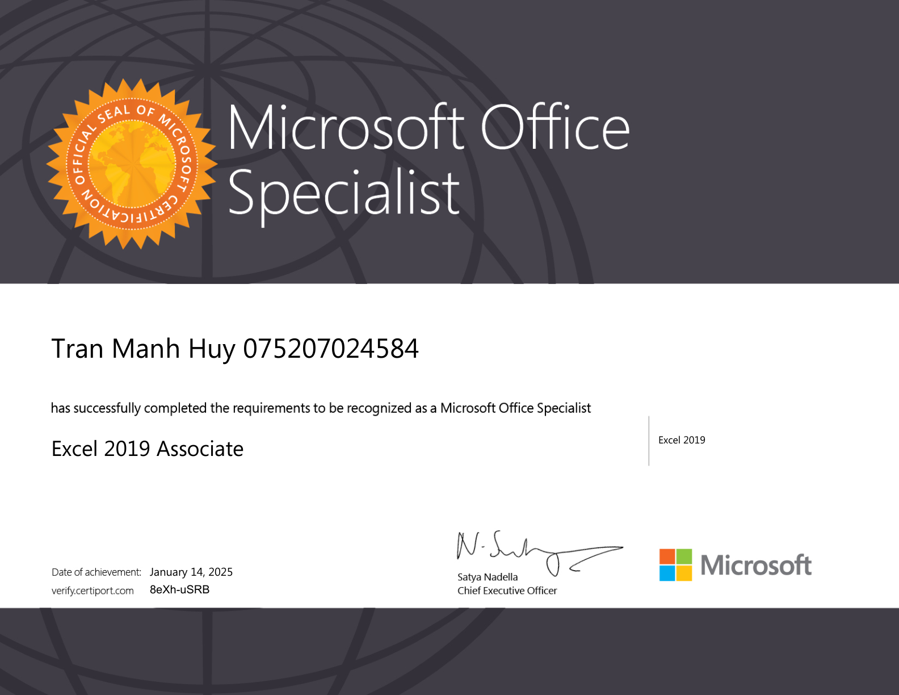
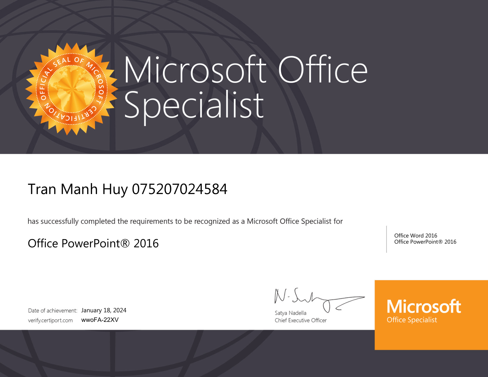

04 / MINH CHỨNG THỰC TẾ
Portfolio. Dự án tiêu biểu
Những sản phẩm và trải nghiệm đại diện cho tư duy hệ thống, sự tỉ mỉ và năng lực thực hành của tôi.
Tổng hợp dự án
| Dự án | Năng lực đại diện | Công nghệ & minh chứng |
|---|
| 1. Quản lý đăng ký học phần & điểm | Tư duy kiến trúc dữ liệu chặt chẽ, tối ưu hiệu năng. | SQL, Relational Schema, Indexing, Transactions. |
| 2. Giao diện web responsive | Sự tỉ mỉ, tính nhất quán thị giác và UI/UX. | HTML5, CSS3 (Flexbox/Grid), đa thiết bị. |
| 3. Hệ thống điều khiển ngoại vi tự động | Kết hợp phần mềm và phần cứng vi điều khiển. | C/C++, Arduino IDE, Arduino Uno / ESP32. |
| 4. Đồ án nhóm cấu trúc dữ liệu & giải thuật | Tinh thần trách nhiệm, điều phối và thuyết trình. | Phân chia công việc, báo cáo và demo thực tế. |
Hình ảnh & minh chứng
Một số hình ảnh thực hành, hồ sơ cá nhân và tài liệu minh chứng trong quá trình học tập.
Mạch điều khiển ngoại viThực hành vi điều khiển và mạch điện tử.
Thực hành phần cứngTìm hiểu quy trình chẩn đoán máy tính.
Hồ sơ cá nhânGiới thiệu và trình bày kỹ năng trên GitHub.
Microsoft Office Specialist: Word 2016Chứng chỉ Microsoft Office Specialist.

Xem PDF
Microsoft Office Specialist: Excel 2019Chứng chỉ Excel 2019 Associate.

Xem PDF
Microsoft Office Specialist: PowerPoint 2016Chứng chỉ Microsoft Office Specialist.
Chưa có minh chứng trong mục này.